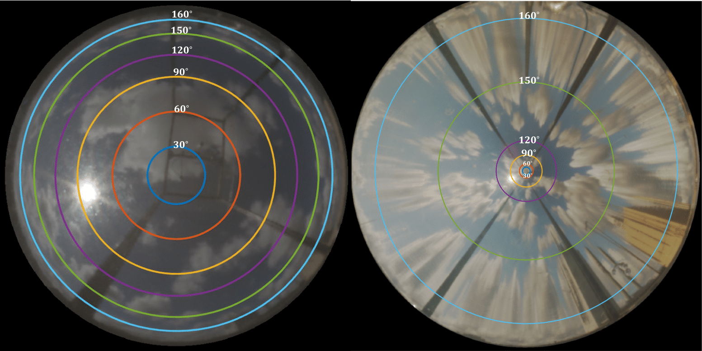
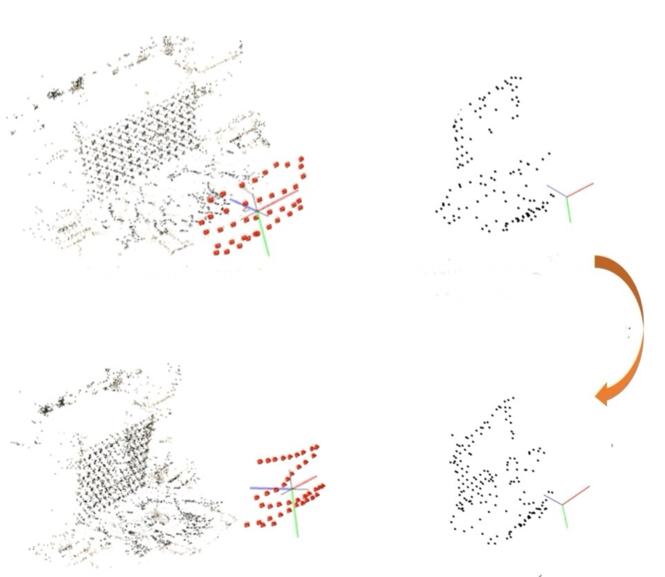
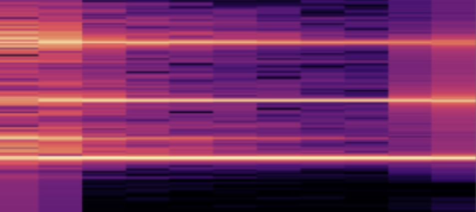
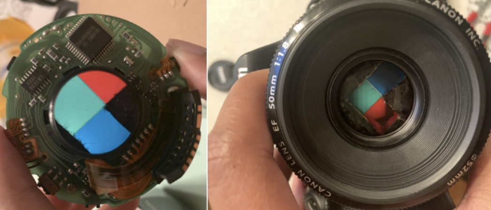
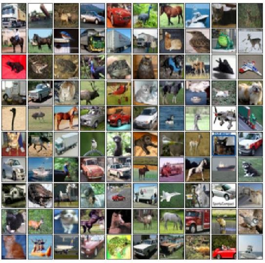

|
Leron Julian I am currently a research engineer at DENSO in the Pittsburgh Innovation Lab, working on autonomous driving. Before that, I completed my PhD in Electrical & Computer Engineering at Carnegie Mellon University, advised by Aswin Sankaranarayanan within the Image Science Lab . I am also a proud Morehouse College Computer Science Graduate, class of 2019. I have also had the opportunity to intern at Samsung Research working with Neural Radiance Fields (NeRF) for monocular 3D reconstruction and at Idaho National Laboratory applying machine learning for online monitoring of nuclear assets. Email: LeronJulian[at]hotmail[dot]com |
InterestsI am a passionate researcher and engineer focused on advancing autonomous systems and robotics through computer vision and machine learning. My key interests include continual semi-supervised learning, world models (NeRF/Gaussian Splatting), and synthetic data generation. |
Publications |
|

|
Computational Imaging for Long-Term Prediction of Solar Irradiance
Leron Julian, Haejoon Lee, Soummya Kar, Aswin Sankaranarayanan IEEE Transactions on Pattern Analysis and Machine Intelligence, 2025 [Paper] [Code] We design and deploy a catadioptric system that delivers wide-angle imagery of the sky with uniform spatial resolution over its FOV. To enable prediction over a longer time horizon, we design an algorithm that uses carefully selected spatio-temporal slices of the imagery using estimated wind direction and velocity as inputst to show that our system that is capable of predicting solar occlusion as well as irradiance for tens of minutes in the future, which is an order of magnitude improvement over prior work. |
|
|
Precise Forecasting of Sky Images Using Spatial Warping
Leron Julian, Aswin Sankaranarayanan International Conference On Computer Vision Workshop (ICCVW), 2021 [Paper] [Supp] [Bibtex] [Code] We introduce a deep learning framework, along with an optimal warping algorithm, to predict a future sky image frame with higher spatial and longer temporal resolution than previous methods. |
|
|
The Development Of A Conversational Agent Mentor Interface Using Short Message Service (SMS)
Leron Julian, Kinnis Gosha Earl W. Huff Jr. ACM SIGMIS Conference on Computers and People Research (SIGMIS-CPR) , 2018 [Paper] We present the design and development of a conversational agent mentor that uses short message service (SMS) as a virtual mentor, to mentor undergraduate computer science majors at a Historically Black College (HBCU) who are considering pursuing a graduate degree in computing. |
|
|
Using SMS As An Interface For A Virtual Mentoring System
Leron Julian, Kinis Gosha Association for Computing Machinery Southeast (ACMSE), 2018 [Poster] Poster presenting the design and development of a conversational agent mentor that uses short message service (SMS) as a virtual mentor, to mentor undergraduate computer science majors at a Historically Black College (HBCU) who are considering pursuing a graduate degree in computing. |
Projects |

|
Dynamic Graphs For Point Cloud Completion
[Paper] We design and deploy a catadioptric system that delivers wide-angle imagery of the sky with uniform spatial resolution over its FOV. To enable prediction over a longer time horizon, we design an algorithm that uses carefully selected spatio-temporal slices of the imagery using estimated wind direction and velocity as inputst to show that our system that is capable of predicting solar occlusion as well as irradiance for tens of minutes in the future, which is an order of magnitude improvement over prior work. |
|

|
Novel View Synthesis of Transparent Objects using Neural Radiance Fields (NeRF)
[Paper] We introduce a deep learning framework, along with an optimal warping algorithm, to predict a future sky image frame with higher spatial and longer temporal resolution than previous methods. |
|

|
Note Recognition in Renditions of Piano Instrumentals
[Paper] We present the design and development of a conversational agent mentor that uses short message service (SMS) as a virtual mentor, to mentor undergraduate computer science majors at a Historically Black College (HBCU) who are considering pursuing a graduate degree in computing. |
|

|
Color-Filtered Aperture for Image Depth Segmentation
[Paper] Poster presenting the design and development of a conversational agent mentor that uses short message service (SMS) as a virtual mentor, to mentor undergraduate computer science majors at a Historically Black College (HBCU) who are considering pursuing a graduate degree in computing. |
|

|
Semi-Supervised Learning For Image Classification
[Paper] Poster presenting the design and development of a conversational agent mentor that uses short message service (SMS) as a virtual mentor, to mentor undergraduate computer science majors at a Historically Black College (HBCU) who are considering pursuing a graduate degree in computing. |
Coursework
18-453 Intro to XR systems
|
|
Website borrowed from here! Last Updated: June 2025 |